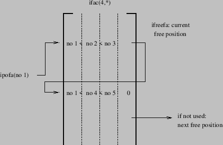
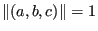

Figure 192:
Node per face relationship
|  |
Faces are stored in field ifac(1..4,*). For a given node i ipofa(i) points to a
face in ifac for which i is the lowest node number. The node numbers of this
face are stored in entries ifac(1..3,ipofa(i)) in ascending order. The entry
ifac(4,ipofa(i)) points to another face for which node i is also the lowest
node, if any. If there exists no face for which i is the lowest node
number ipofa(i)=0 (Figure 192). The scalar ifreefa points to a free
entry in field ifac. For any line j in ifac which is not used yet ifac(4,j)
points to the next free entry.
Other fields with a similar number of lines as ifac are itetfa, planfa and
iexternfa. They contain:
- itetfa(1..2,i): the tetrahedral elements to which face i belongs. For an
external face the second entry is zero.
- planfa(1..4,i): the equation of the face in the form ax+by+cz+d=0, with
.
- iexternfa(i): takes a nonzero value j for an external face, else
zero. A nonzero value points to a parent external face (an external face
belonging to the unrefined mesh) which is in the immediate neighborhood of
face i. The parent external face information is stored in fields
ifacext(1..6,*) and ifacexted(1..3,*). These fields are static and created
at the start of the refinement. ifacext(1..6,j) contains the nodes belonging
to face j, ifacexted(1..3,j) contains the external edges belonging to the
face. Information on these external edges, e.g. external edge j, is stored
in isharp(j), iedgext(1..3,j) and iedgeextfa(1..2,j). The reader is referred
to the previous section for information on these fields. All of these fields
are needed for the nodal projection at the end of the refinement.
All these fields (except the external ones) are dynamically adjusted during mesh refinement.